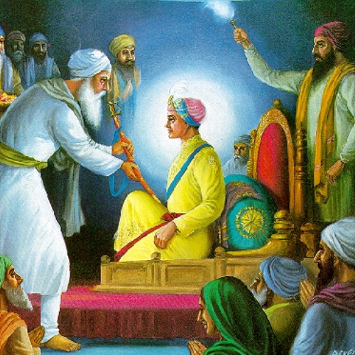

Guru Hargobind Sahib Ji

The 6th Sikh Guru was Guru Hargobind Sahib Ji. He was born on June 19, 1595, and became
the Guru of the Sikh community at a young age after the shaheedi of his father, Guru
Arjan Dev Ji. Guru Hargobind Sahib Ji played a crucial role in shaping Sikhism during a
challenging period marked by religious persecution. Unlike his predecessors, Guru Hargobind
Sahib Ji was not only a spiritual leader but also a warrior. He introduced the concept
of the Miri-Piri, emphasizing the harmonious integration of spiritual and temporal
aspects of life. This philosophy encouraged Sikhs to be both spiritually enlightened
and physically capable. Guru Hargobind Sahib Ji is particularly known for constructing
the Akal Takht, the Throne of the Almighty, at the Golden Temple complex in Amritsar.
This symbolized the temporal authority of the Sikhs and became a center for both
spiritual guidance and dispute resolution. During his tenure, Guru Hargobind Sahib Ji
also organized the Sikh community into a military force to protect themselves from
external threats. He led the Sikhs in battles against oppressive rulers while promoting
self-defense and the protection of religious freedom. Guru Hargobind Sahib Ji served as
the Guru from 1606 until his passing in 1644. His leadership marked a transformative
period for Sikhism, shaping its identity as a martial and spiritually resilient
community.